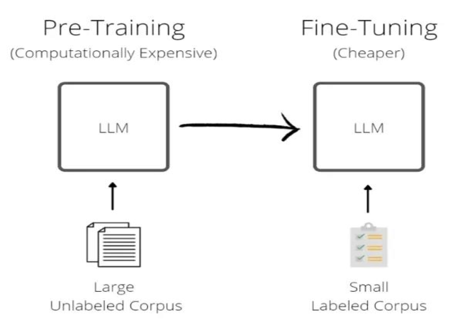
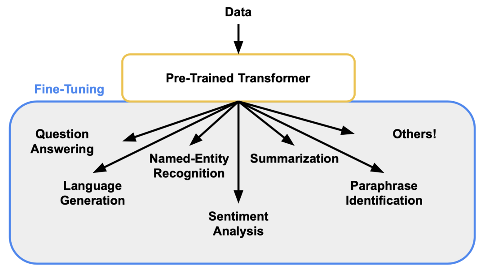
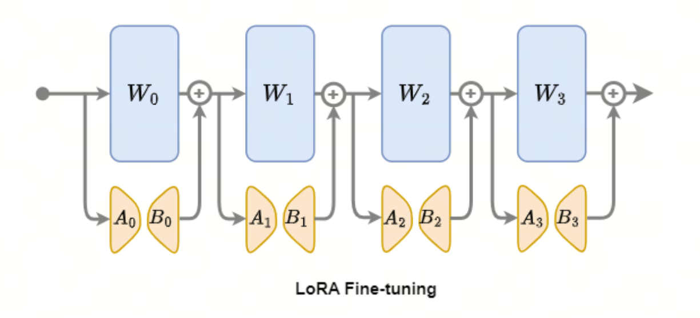
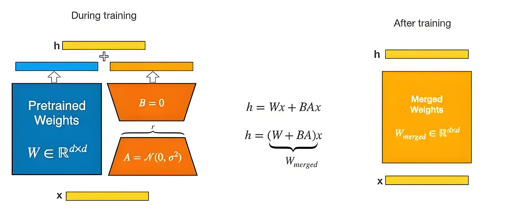
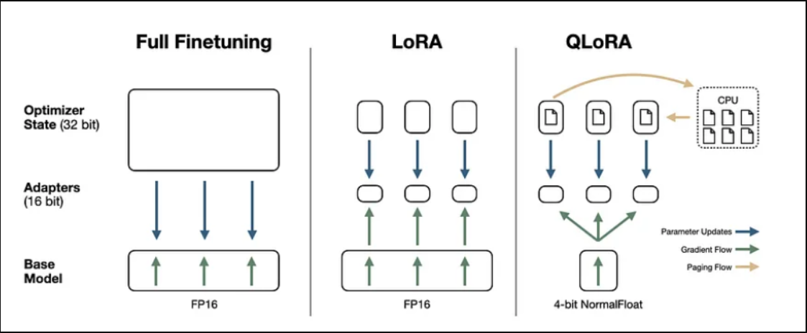
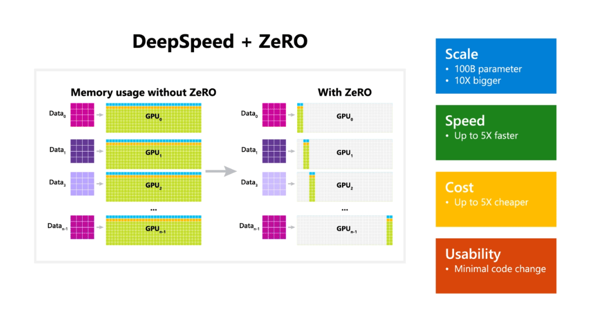
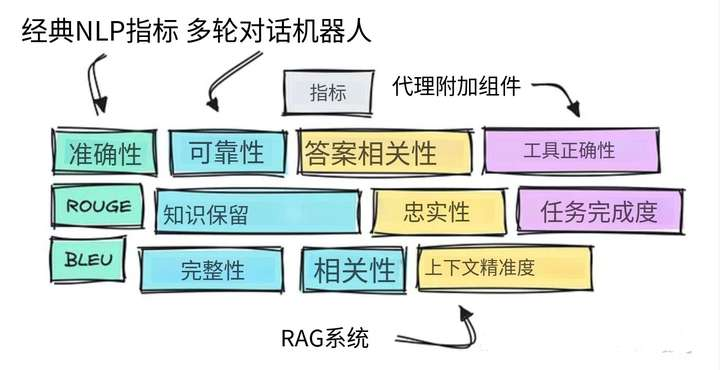
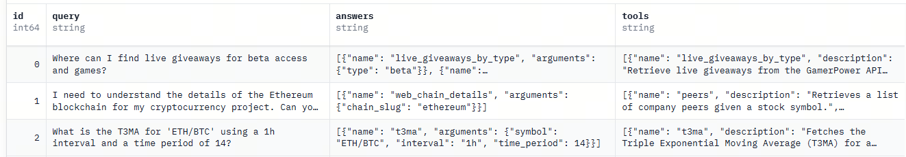
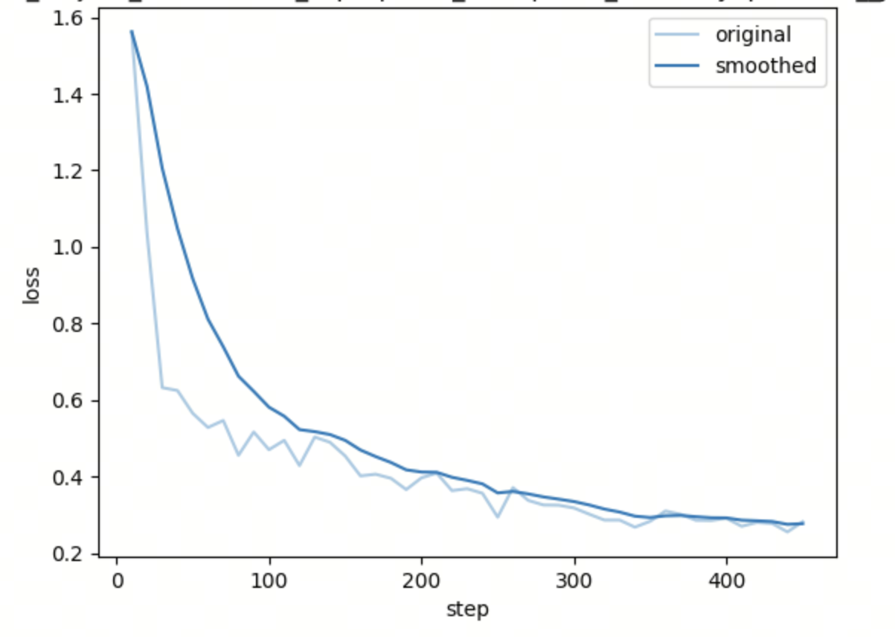
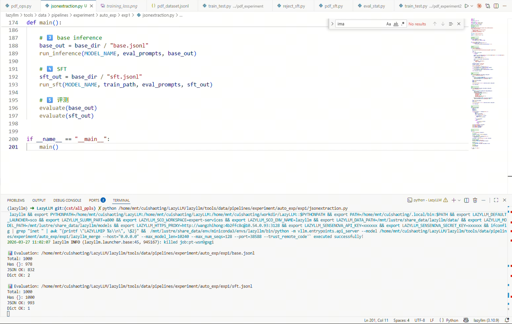

第11课时：指令微调原理与策略¶
完成大规模预训练后，模型已经积累了丰富的通用语言知识，能够理解和生成自然语言。它可以读懂句子结构、学习词语关联、捕捉长距离依赖，甚至对一些常识性问题给出合理回答。但这并不意味着它能直接胜任具体任务——预训练让模型“懂语言规则”，却不保证它能理解用户意图或按期望方式回应问题。
1 什么是 SFT，为什么 SFT 决定模型好不好用¶
完成大规模预训练后，语言模型已经具备了强大的通用语言建模能力, 然而，这种能力的本质仍然是——续写文本，而不是理解并执行指令。
从训练目标上看，预训练语言模型优化的是自回归语言建模目标：
其中：
- \(\mathcal{L}_{\text{LM}}\)：语言建模损失函数
- \(t\)：token 在序列中的位置索引
- \(x_t\)：第 \(t\) 个 token
- \(x_{<t}\)：当前位置之前的上下文 token
- \(P(x_t \mid x_{<t})\)：条件概率
这一目标决定了模型的核心行为是：
在给定上下文的情况下，预测下一个最可能的 token，使文本在语义和形式上保持连贯。
因此，当模型面对如下输入时：
问题：法国的首都是
它更倾向于生成一段“合理的续写”，例如背景描述或扩展说明，而并不一定给出一个直接、明确的答案。
这在语言层面是正确的，但在任务层面却是“没有听懂指令”。

模型先通过大量文本预训练，然后使用小量指令训练集微调。
1.1 从“续写模型”到“指令模型”¶
为了让模型真正具备“听懂人类指令并给出期望回答”的能力，需要引入监督微调（Supervised Fine-Tuning, SFT）。
SFT 的核心思想并不复杂：
通过大量 指令—响应（Instruction–Response）或问答式标注数据，显式地让模型学习如下条件分布：
与预训练阶段相比，模型的学习重点发生了本质变化：
- 不再只是“文本如何自然延续”
- 而是在给定指令约束下，什么样的输出才是正确的、符合人类期望的
换言之，SFT 并没有引入新的模型结构，也没有增加新的推理模块，
而是通过重塑训练数据分布与输入结构，激发并对齐了模型原本隐含的指令遵循能力。

预训练阶段赋予模型通用语言能力，而 SFT 则将这种能力映射到具体任务与交互形式中，使模型从“会写话”，转变为“会回答问题、会对话”。
1.2 多轮对话与角色意识的形成¶
在实际的指令微调数据中，输入往往具有清晰的结构，例如：
- 指令 / 背景 / 回答
- User / Assistant 的角色划分
- 多轮对话历史 + 当前问题
这种结构化输入使模型逐渐学会：
- 区分不同文本片段所扮演的角色
- 理解当前输出的职责（回答者、解释者、助手）
- 在多轮上下文中保持语义一致性和逻辑连贯性
从概率建模角度看，多轮对话并没有引入新的模型结构，其本质仍然是条件语言建模：
其中：
- \(y_t\)：当前时刻生成的 token
- \(\text{History}\)：历史对话（包含多轮 User / Assistant 交互）
- \(x\)：当前用户输入
关键变化在于：
History 被结构化编码（如 role 标记与顺序信息），使模型能够区分“谁在说话”。
因此模型实际学到的是：
- 角色条件生成（role-conditioned generation）
- 上下文感知续写（context-aware continuation）
这也解释了以下现象：
- 模型能够“记住”上下文信息
- 能区分 User 与 Assistant 的职责
- 能在多轮对话中保持逻辑一致性
从本质上看，对话能力并非新能力，而是语言建模能力在结构化输入下的自然涌现。
1.3 指令对齐的代价：Alignment Tax（对齐税）¶
尽管 SFT 极大提升了模型的可用性与指令遵循能力，但这种对齐过程并非没有代价。
Alignment Tax 指的是：
模型为了更好地符合人类指令与使用预期，在部分通用能力上所付出的性能损失。
常见表现包括：
-
生成多样性下降
输出更趋向安全、规范和模板化，探索性表达减少 -
推理与创造能力受限
在开放性问题或复杂推理任务中表现下降 -
过度对齐现象
对模糊问题频繁拒答或加入冗余免责声明
成因分析¶
Alignment Tax 的根本原因在于：
- 指令数据分布有限，且偏向“人类偏好答案”
- 训练目标强调“符合期望”，而非“信息最大化”
- 模型在微调中对特定输出模式产生偏置
工程实践中的影响与缓解策略¶
在实际系统中，Alignment Tax 常表现为：
- 回复变长但信息密度下降
- 对开放问题回答保守
- 工具调用场景中出现多余解释
常见缓解策略包括：
1. 混合训练目标（SFT + LM）
其中：
- \(\mathcal{L}_{\text{SFT}}\)：指令微调损失
- \(\mathcal{L}_{\text{LM}}\)：语言建模损失
- \(\lambda\)：权重系数
该方法可在对齐能力与生成能力之间取得平衡。
2. 分阶段对齐
例如：
- SFT（基础指令能力）
- RLHF / DPO（偏好优化）
避免一次性过强约束模型。
3. 推理阶段控制（Prompt Engineering）
通过 prompt 控制输出风格，例如：
- “Be concise”
- “Output only JSON”
减少过度解释问题。
1.4 为什么 SFT 仍然不可或缺？¶
尽管 SFT 存在 Alignment Tax，但它仍然是大模型走向实际应用的关键阶段。
从能力角度来看，预训练模型与 SFT 模型存在本质差异：
| 能力 | 预训练模型 | SFT 模型 |
|---|---|---|
| 文本续写能力 | 强 | 强 |
| 指令理解能力 | 弱 | 强 |
| 输出格式控制 | 弱 | 强 |
| 多轮对话能力 | 不稳定 | 稳定 |
| 实际可用性 | 低 | 高 |
SFT 的核心价值不在于提升模型“知识量”，而在于提升：
可控性（Controllability）与可用性（Usability）
具体而言：
-
让模型真正“听懂指令”
避免答非所问 -
桥接通用能力与具体任务
将语言能力映射为任务能力 -
约束输出格式与行为边界
满足工程系统的可解析性与安全性需求
因此，可以将大模型能力分为两个阶段：
- 预训练：学习“如何说话”
- SFT：学习“在什么情况下该说什么话”
SFT 是连接模型能力与真实应用之间的关键桥梁。
2 微调方法¶
在监督微调（SFT）阶段，模型参数的更新方式直接影响训练效率、显存占用以及最终模型在下游任务上的表现。选择合适的微调策略，不仅关系到资源消耗，也关系到模型能否快速适应新任务。
根据参数更新范围和训练成本的不同，常用微调方法可分为几类：
| 方法 | 参数更新范围 | 显存占用 | 训练成本 | 适用场景 | 特点 |
|---|---|---|---|---|---|
| 全参数微调（Full Fine-tuning） | 更新所有参数 | 高 | 高 | 大规模任务、模型深度优化 | 学习能力最强，但成本昂贵，需要完整保存权重 |
| LoRA（Low-Rank Adaptation） | 在权重矩阵中插入低秩适配层 | 低 | 低 | 中小规模微调、指令任务 | 性能接近全参数微调，显存占用低，参数可复用，当前主流方案 |
| Adapter | 在每层 Transformer 中插入小型瓶颈层 | 中 | 中 | 多任务学习、持续训练 | 模块化设计，方便增量扩展和多任务适配 |
| Prompt-tuning / Prefix-tuning | 仅训练前置或中间虚拟向量（prompt embedding） | 极低 | 极低 | 特定任务快速适配 | 训练速度快，但泛化能力有限，适合轻量级快速实验 |
从总体趋势来看，LoRA 是当前最主流的参数高效微调方式，在保持接近全参数微调性能的同时，大幅降低了显存与计算资源需求。
2.1 参数高效微调（PEFT）¶
随着大规模预训练语言模型（Large Language Models, LLMs）参数规模不断扩大，传统的全参数微调（Full Fine-Tuning）在计算资源、显存占用和训练成本等方面逐渐变得不可行。尤其在指令微调与领域适配等典型场景中，下游任务往往只需要对模型行为进行有限幅度的调整，而非整体能力的重塑。
在这一背景下，参数高效微调（Parameter-Efficient Fine-Tuning, PEFT） 方法应运而生。其核心思想是：
在尽可能冻结预训练模型参数的前提下，仅引入少量可训练参数，实现对新任务分布的有效适配。
相较于全参数微调，PEFT 方法具有以下显著优势：
- 可训练参数量显著减少，通常仅占原模型的极小比例
- 显存与通信开销大幅降低，训练门槛显著下降
- 原始模型能力得以完整保留，避免灾难性遗忘
- 适配参数可独立存储与加载，便于多任务与多领域部署
在众多 PEFT 方法中，基于低秩假设的 LoRA 及其一系列变体已成为当前最具代表性且应用最广泛的技术路线。它们从不同角度对 LoRA 的表达能力、显存效率与参数分配方式进行了改进，构成了现代参数高效微调方法的核心体系。
本节将系统介绍几种典型的 PEFT 方法，包括 LoRA、QLoRA、AdaLoRA 以及 DoRA，重点分析其设计动机、核心机制及适用场景。

LoRA微调流程
2.1.1 LoRA：低秩假设下的参数高效适配¶
LoRA（Low-Rank Adaptation）基于一个关键观察：
在下游任务中，预训练模型所需的权重更新往往位于一个低秩子空间中。 因此，与其对完整权重矩阵 \(W\) 进行更新，不如仅学习一个低秩的增量

蓝色部分为主模型权重，在训练中参数被冻结。橙色A，B两个矩阵为LoRA微调矩阵。右边黄色为训练之后权重融合矩阵，用于之后的模型推理。
其中：
- \(\Delta W\)：权重更新矩阵
- \(B \in \mathbb{R}^{d_{\text{out}} \times r}\)：输出方向低秩矩阵
- \(A \in \mathbb{R}^{r \times d_{\text{in}}}\)：输入方向低秩矩阵
- \(r\)：低秩维度（rank）
在前向传播中，线性变换可表示为：
其中 \(\alpha\) 为缩放系数，用于控制低秩更新项的幅度并提升训练稳定性。
这种设计带来的直接好处包括：
- 显著减少可训练参数数量（通常 < 1%）
- 显存占用与通信成本大幅降低
- 不影响推理时的模型结构（可合并权重）
因此，LoRA 成为当前指令微调与领域微调中最主流的 PEFT 方法。
2.1.2 QLoRA：在极低显存条件下微调大模型¶
尽管 LoRA 已显著降低了训练成本，但当模型规模达到数十亿甚至百亿参数时，基座模型本身的显存占用仍然是主要瓶颈。
QLoRA（Quantized LoRA）进一步提出：
将预训练模型权重量化到 4-bit，同时仅对 LoRA 参数进行 FP16/BF16 训练。

最右边为 QLoRA 微调流程图。其中模型参数在部署与训练时被量化压缩为 4-bit NF4（NormalFloat4） 形式，极大地减少了显存与内存占用；在前向与反向计算过程中，权重会按需反量化（dequantize）为 FP16/BF16 精度参与计算，而可训练的 LoRA 低秩适配器始终保持高精度，从而在几乎不牺牲模型性能的前提下实现高效微调。
其核心组成包括：
- 4-bit NF4 权重量化：减少基座模型显存占用
- Double Quantization：进一步压缩量化参数
- LoRA 作为唯一可训练参数
从本质上看，QLoRA 并未改变 LoRA 的参数更新形式，而是通过：
- 对冻结的基座模型权重进行 4-bit 量化存储（如 NF4）；
- 在计算阶段按需将量化权重反量化为 FP16/BF16 参与前向与反向传播；
- 仅对新增的低秩 LoRA 适配器参数进行高精度梯度更新
实现了 “单卡微调大模型” 的工程突破。
适用场景：
- 显存极其受限（如 24GB / 48GB GPU）
- 指令微调或领域适配
- 需要在消费级硬件上实验大模型
2.1.3 AdaLoRA：动态分配参数预算的 LoRA 变体¶
标准 LoRA 需要为所有被注入的层指定统一的 rank \(r\)，但在实际中：
- 不同层对下游任务的重要性不同
- 固定 rank 可能导致参数分配不合理
AdaLoRA（Adaptive LoRA）提出了一种 动态 rank 分配机制：
- 在训练过程中，根据参数重要性评估
- 对重要层分配更高 rank
- 对不重要层逐步降低 rank，甚至裁剪
其核心思想是：
在给定总参数预算的前提下，将有限的低秩容量分配给“更值得更新”的位置。
相比标准 LoRA，AdaLoRA 的优势在于：
- 参数利用率更高
- 在相同或更低参数量下，性能更优
- 更适合参数预算受限或追求极致效率的场景
2.1.4 DoRA：解耦权重方向与幅度的适配方式¶
DoRA（Weight-Decomposed LoRA）的核心创新不在于低秩结构本身，而在于权重更新的重参数化方式。
DoRA 将权重更新显式拆分为两个相互独立、可分别学习的组成部分：
其中：
- \(\frac{\Delta W}{\|\Delta W\|}\) 表示归一化后的权重更新方向
- \(\alpha\) 表示权重更新的幅度参数，由模型单独建模和学习
该设计带来的关键差异体现在以下几个方面：
- 更新强度显式可控 权重变化幅度不再由参数范数隐式决定，而是由独立参数直接控制，避免更新强度随训练过程不可预测地波动。
- 方向学习更稳定 方向参数仅负责表示“往哪里更新”，不再同时承担尺度信息，使梯度优化更加稳定。
- 行为调整更加细粒度 模型可以在保持方向不变的情况下，仅通过调整幅度来精细控制输出行为变化。
- 更适合对齐阶段训练 在指令对齐、偏好对齐等场景中，可在保证模型不发生剧烈漂移的前提下进行渐进式调整。
从参数高效微调的角度看，DoRA 本质上引入了一种 “幅度受控的方向更新机制”，在不改变低秩更新结构复杂度的情况下，显著提升了模型调节行为的可控性与稳定性。
2.1.5 各类 PEFT 方法对比总结¶
| 方法 | 核心思想 | 主要解决问题 | 典型使用场景 |
|---|---|---|---|
| LoRA | 低秩参数更新 | 降低微调成本 | 通用指令微调 |
| QLoRA | 量化 + LoRA | 显存瓶颈 | 单卡大模型微调 |
| AdaLoRA | 动态 rank 分配 | 参数预算受限 | 高效领域适配 |
| DoRA | 解耦方向与幅度 | 表达能力受限 | 高质量对齐 |
从整体演化路径来看，PEFT 方法的核心目标始终一致：
在尽可能少地修改预训练模型的前提下，实现对新任务或新指令分布的高效适配。
2.2 全量微调（Full Fine-Tuning）¶
与参数高效微调（PEFT）不同，全量微调（Full Fine-Tuning）指的是：
在训练过程中对模型的全部参数进行更新，不冻结任何权重。
从优化角度看，全量微调允许模型在更大的参数空间中进行调整，因此具备最强的表达能力；但其代价也最为明显——计算、显存与通信成本极高。
2.2.1 什么时候必须使用全量微调？¶
尽管 PEFT 在多数指令微调场景下已经足够有效，但在以下情形中，全量微调仍然具有不可替代性：
1. 任务分布与预训练差异极大
- 全新领域（法律、医疗、科研文本）
- 非自然语言分布（代码、公式、结构化文本）
- 低资源语言或跨语言任务
此时，仅在局部权重上进行低秩调整可能不足以完成分布迁移。
2. 模型结构或表示需要整体重塑
- 长上下文能力扩展
- 推理风格或生成模式发生根本变化
- 模型需学习新的表达范式（如格式化输出、复杂推理链）
3. 追求极致性能或作为最终发布模型
- Benchmark 冲榜
- 高价值商业模型
- 作为后续蒸馏、对齐或裁剪的“教师模型”
在这些场景下，全量微调通常能够取得高于 PEFT 的性能上限。
2.2.2 全量微调的主要成本来源¶
全量微调的高成本主要来自以下三部分：
1. 参数存储
- 模型权重
- 梯度
- 优化器状态（如 Adam 的一阶、二阶动量）
2. 显存占用
- 单参数通常需要 12～16 字节（FP16 / BF16 + Adam）
- 一个 7B 模型在全量微调时，显存需求可达数百 GB
3. 分布式通信开销
- 梯度同步
- 参数更新
- 优化器状态同步
示例：以 7B 规模 Transformer 模型为例
以一个约 7B 参数的大语言模型，采用 FP16 + Adam 进行全量微调为例：
- 参数存储： 每个参数需同时保存权重、梯度以及 Adam 的一阶与二阶动量，单参数约占 12 字节，仅模型相关状态就需要约 80 GB 显存。
- 显存占用： 训练过程中还需存储前向激活、中间计算结果和临时缓冲区，即使采用激活检查点（Activation Checkpointing），整体峰值显存仍通常超过 100 GB。
- 分布式通信开销： 在数据并行或 ZeRO 训练框架下，每一步都需要对数十亿参数的梯度和优化器状态进行同步，对带宽和通信延迟提出了较高要求。
因此，在实际工程中，全量微调 7B 级模型往往需要多张高端 GPU（如 A100 / H100）甚至多机集群支持，这也是参数高效微调方法被广泛采用的根本原因。
2.2.3 ZeRO：分布式显存优化的核心思想¶
为了解决全量微调的显存瓶颈，DeepSpeed 提出了 ZeRO（Zero Redundancy Optimizer）。
其核心思想是：
在数据并行训练中，避免每张 GPU 上都保存一份完整的模型状态。
ZeRO 将模型训练所需的状态拆分为三类：
- 参数（Parameters）
- 梯度（Gradients）
- 优化器状态（Optimizer States）
并按阶段逐步消除冗余存储。

上图展示了 DeepSpeed + ZeRO（Zero Redundancy Optimizer） 在分布式训练中的核心思想与效果。左侧为未使用 ZeRO 的传统数据并行方式：每张 GPU 都需要完整保存一份模型参数、梯度以及优化器状态，导致显存高度冗余，模型规模受到单卡显存的严格限制。右侧为启用 ZeRO 后的内存布局：模型参数、梯度与优化器状态被按不同阶段切分并分散存储在多张 GPU 上，每张 GPU 仅持有全局状态的一小部分，从而显著降低单卡显存占用。在此基础上，DeepSpeed 能够在几乎不改变原有训练代码的前提下，实现 百亿级参数模型的可扩展训练，同时带来更高的训练速度与更低的硬件成本。
在不同的ZeRO版本中，ZeRO-3 是对显存最友好的配置：
- 参数、梯度、优化器状态 全部分片存储
- 每张 GPU 仅保存当前计算所需的最小参数子集
- 前向 / 反向计算时按需通信加载参数
这使得单卡显存占用近似降低为：
其中 \(N_{\text{GPU}}\) 为并行 GPU 数量。
在显存依然不足的情况下，ZeRO-3 还支持 Offload 机制：
- 将部分或全部参数 / 优化器状态：
- Offload 到 CPU 内存（RAM）
- 或 NVMe 磁盘
这种策略的本质是：
用额外的通信和计算时间，换取更低的 GPU 显存占用。
常见 Offload 方式包括：
| Offload 类型 | Offload 对象 | 特点 |
|---|---|---|
| CPU Offload | 参数 / 优化器状态 | 显存压力最小，但训练速度下降 |
| NVMe Offload | 参数 / 优化器状态 | 显存占用极低，但 I/O 成为瓶颈 |
在实际工程中，ZeRO-3 + CPU Offload 常用于：
- 超大模型全量微调
- 显存受限但时间相对充裕的训练环境
- 学术或探索性实验
2.3 全量微调 vs PEFT：如何选择？¶
| 维度 | 全量微调 | PEFT |
|---|---|---|
| 可训练参数 | 100% | < 1% |
| 性能上限 | 高 | 中～高 |
| 显存需求 | 极高 | 低 |
| 工程复杂度 | 高 | 低 |
| 适用阶段 | 最终模型 / 教师模型 | 快速适配 / 多任务 |
实践中常见的策略是：
先使用 PEFT 快速验证任务可行性，再在必要时采用全量微调追求性能上限。
3 训练配置与超参数¶
在 SFT 训练过程中，训练配置与超参数直接决定模型的学习效率、收敛速度以及最终效果。即使数据质量高、微调方式合理，如果训练超参数设置不当，也可能导致模型不收敛、过拟合或出现“训崩”现象。因此，合理配置训练参数是 SFT 阶段的核心步骤之一。
本节将围绕学习率策略、batch size、序列长度、优化器设置、训练时长与稳定性技巧等方面展开介绍。
3.1 学习率（Learning Rate）¶
学习率是最关键的超参数之一。对于大模型，学习率过大容易导致梯度不稳定；学习率过小可能导致训练停滞。
推荐设置：
- 全参数微调：1e-5 ~ 2e-5
- LoRA 微调：1e-4 ~ 3e-4
- Prompt/Prefix-tuning：5e-4 ~ 1e-3
一般遵循两条原则：
- 模型越大，学习率越小
- 训练模块越少（如 LoRA），学习率可适当更大
为了进一步提升稳定性，通常会使用 warmup（预热）策略：
- warmup ratio：0.01 ~ 0.05
在训练初期缓慢增大学习率，可以避免梯度爆炸。
3.2 Batch Size 与梯度累积（Gradient Accumulation）¶
Batch size 决定了训练的稳定性与收敛速度。大 batch 更稳定，但显存要求高；小 batch 则需配合梯度累积。
推荐配置：
- 有效 batch size：128 ~ 1024（取决于模型规模与任务难度）
- 单卡 batch size：4 ~ 16（常见）
- 梯度累积步数：根据显存自动调整，以达到目标有效 batch size
常见实践：
如果单卡只能放下 batch=4，而想达到有效 batch=512，则设置：
3.3 最大序列长度（Max Sequence Length）¶
SFT 训练中，输入序列长度影响训练成本与任务适配能力。
建议设置：
| 任务类型 | 建议序列长度 |
|---|---|
| 简单单轮指令任务 | 512 ~ 1024 |
| 文本生成、文章总结 | 1024 ~ 2048 |
| 多轮对话、长上下文任务 | 2048 ~ 4096（或根据模型支持扩展） |
注意：序列长度越长，显存占用近似线性增长。
如需训练长上下文模型，可搭配：
- FlashAttention
- Gradient Checkpointing
- 分布式训练策略（如 ZeRO）
3.4 优化器（Optimizer）与权重衰减（Weight Decay）¶
大模型常用优化器包括：
AdamW（主流）
- β1 = 0.9
- β2 = 0.95 或 0.999
- weight decay = 0.01
AdamW 是当前 Transformer / LLM 微调的事实标准，尤其适用于 LoRA 等参数高效微调方法。
Adam（较早方式）
- 将 L2 正则项直接耦合进梯度更新
- 在大模型与长序列训练中，容易导致权重尺度失控
- ❌ 不推荐用于大模型 SFT
Adafactor
-
用行列式估计代替存储完整的二阶矩阵，显著降低优化器状态显存
-
更适合 超大模型或显存受限场景
-
常用于预训练或极大规模模型
如果使用 LoRA 或 Adapter，AdamW 几乎是默认选择。
| 优化器 | 典型超参数 | Weight Decay 处理方式 | 优点 | 缺点 | 适用场景 |
|---|---|---|---|---|---|
| AdamW（主流） | β₁ = 0.9 β₂ = 0.95 / 0.999 lr = 1e-4 ～ 2e-5 wd = 0.01 |
权重衰减与梯度更新解耦 | 训练稳定；权重尺度可控；与 Transformer 结构高度契合 | 显存占用略高于 Adam | LLM 微调（SFT）；LoRA / Adapter；主流工业实践 |
| Adam（较早方式） | β₁ = 0.9 β₂ = 0.999 |
L2 正则直接耦合进梯度 | 实现简单；早期小模型常用 | 权重尺度易失控；长序列训练不稳定 | 不推荐用于 LLM；仅限小模型或早期实验 |
| Adafactor | 无显式 β₂ lr 通常较小 |
可选（通常关闭或弱化） | 不存完整二阶矩；显存占用极低 | 收敛调参困难；稳定性略逊 | 超大模型预训练；显存受限场景 |
3.4.1 Adam 的核心公式（L2 正则耦合版本）¶
Adam 与 AdamW 在一阶、二阶动量估计与偏置修正部分是相同的，其核心区别在于 权重衰减（L2 正则）是否与梯度更新解耦。
梯度（含 L2 正则项）：
其中：
- \(\theta_t\)：第 \(t\) 步训练时的模型参数
- \(\mathcal{L}(\theta_t)\)：在参数 \(\theta_t\) 下计算得到的训练损失函数
- \(\nabla_{\theta} \mathcal{L}(\theta_t)\)：损失函数关于参数 \(\theta_t\) 的梯度
- \(\lambda\)：权重衰减系数（L2 正则强度）
- \(g_t\)：第 \(t\) 步的有效梯度，包含损失梯度与 L2 正则项
在 Adam 中，权重衰减项 \(\lambda \theta_t\) 被直接加到梯度中，与损失梯度共同参与后续动量估计。
一阶动量（梯度均值）：
其中：
- \(m_t\)：第 \(t\) 步的一阶动量估计，用于平滑梯度方向
- \(m_{t-1}\)：前一步的一阶动量
- \(\beta_1\)：一阶动量衰减系数，控制历史梯度的保留程度（常取 \(0.9\)）
二阶动量（梯度方差）：
其中：
- \(v_t\)：第 \(t\) 步的二阶动量估计，用于刻画梯度尺度
- \(v_{t-1}\)：前一步的二阶动量
- \(\beta_2\)：二阶动量衰减系数（常取 \(0.95\) 或 \(0.999\)）
- \(g_t^2\)：梯度的逐元素平方
偏置修正（Bias Correction）：
其中：
- \(\hat{m}_t\)：经过偏置修正的一阶动量估计
- \(\hat{v}_t\)：经过偏置修正的二阶动量估计
- \(t\)：当前训练步数
偏置修正用于抵消训练初期动量初始化为零所带来的系统性偏差。
参数更新（Adam）：
其中：
- \(\theta_{t+1}\)：第 \(t+1\) 步更新后的模型参数
- \(\eta\)：学习率（learning rate）
- \(\epsilon\)：数值稳定项，防止除零（通常取 \(10^{-8}\)）
关键问题说明：
- 权重衰减通过梯度项间接影响参数更新
- 在自适应缩放（\(\hat{v}_t\)）作用下，实际正则强度难以精确控制
- 在大模型与长序列训练中，容易导致参数尺度漂移
因此，Adam 不推荐用于大模型 SFT 场景。
3.4.2 AdamW 的核心公式¶
下面以 AdamW 为例，介绍其核心更新公式。
梯度与动量估计
设第 \(t\) 步时，参数为 \(\theta_t\)，损失函数为 \(\mathcal{L}\)。
梯度：
$$ g_t = \nabla_{\theta} \mathcal{L}(\theta_t) $$
- \(g_t\)：当前参数的梯度
一阶动量（均值）：
$$ m_t = \beta_1 m_{t-1} + (1 - \beta_1) g_t $$
- \(m_t\)：梯度的一阶动量估计（类似动量）
- \(\beta_1\)：控制历史梯度的平滑程度
二阶动量（方差）：
$$ v_t = \beta_2 v_{t-1} + (1 - \beta_2) g_t^2 $$
- \(v_t\)：梯度平方的指数滑动平均
- \(\beta_2\)：控制梯度方差的平滑程度
- \(g_t^2\)：逐元素平方
偏置修正（Bias Correction）
由于 \(m_t, v_t\) 在训练初期偏向 0，需要进行修正：
$$ \hat{m}_t = \frac{m_t}{1 - \beta_1^t}, \quad \hat{v}_t = \frac{v_t}{1 - \beta_2^t} $$
- \(\hat{m}_t, \hat{v}_t\)：无偏的一阶、二阶动量估计
- \(t\)：当前训练步数
参数更新（AdamW）
$$ \theta_{t+1} = \theta_t - \eta \frac{\hat{m}_t}{\sqrt{\hat{v}_t} + \epsilon} - \eta \lambda \theta_t $$
其中：
- \(\eta\)：学习率（learning rate）
- \(\epsilon\)：数值稳定项（通常为 \(10^{-8}\)）
- \(\lambda\)：权重衰减系数（weight decay）
- 最后一项为 与梯度解耦的权重衰减项（AdamW 的关键区别）
3.4.3 Adafactor 的核心公式¶
Adafactor 是一种面向大规模模型训练的自适应优化器，其核心目标是在保持自适应学习率优势的同时，显著降低二阶动量的显存开销。
与 Adam / AdamW 不同，Adafactor 通过对二阶动量进行因子分解近似，避免显式存储完整的二阶矩阵。
梯度：
其中：
- \(\theta_t\)：第 \(t\) 步训练时的模型参数
- \(\mathcal{L}(\theta_t)\)：在参数 \(\theta_t\) 下计算得到的训练损失
- \(g_t\)：第 \(t\) 步的参数梯度
一阶动量（可选）：
在 Adafactor 中，一阶动量并非必须组件。若启用，其形式为：
其中：
- \(m_t\)：第 \(t\) 步的一阶动量估计
- \(m_{t-1}\)：前一步的一阶动量
- \(\beta_1\)：一阶动量衰减系数（部分实现中取 \(0.0\) 或直接关闭）
注：在 T5 等经典实现中，Adafactor 通常不使用一阶动量，以进一步节省显存并简化更新过程。
二阶动量的因子分解估计（以矩阵参数为例）：
对于参数矩阵 \(\theta \in \mathbb{R}^{n \times m}\)，其梯度平方 \(g_t^2\) 的二阶统计量不再整体存储，而是分解为行与列两个方向的指数滑动平均：
其中：
- \(r_t \in \mathbb{R}^{n}\)：行方向的二阶动量估计
- \(c_t \in \mathbb{R}^{m}\)：列方向的二阶动量估计
- \(\beta_2\)：二阶动量衰减系数
- \(\mathrm{row\_mean}(\cdot)\)：对梯度平方按列求均值
- \(\mathrm{col\_mean}(\cdot)\)：对梯度平方按行求均值
二阶动量近似重构：
其中：
- \(\hat{v}_t\)：通过因子分解重构得到的二阶动量近似
- \(\mathrm{mean}(r_t)\)：用于数值归一化，保证尺度稳定
该近似使二阶动量的存储复杂度从 \(O(nm)\) 降至 \(O(n + m)\)。
参数更新（Adafactor）：
若启用一阶动量：
若未启用一阶动量，则直接使用梯度：
其中：
- \(\theta_{t+1}\)：更新后的模型参数
- \(\eta\)：学习率（可采用固定值或相对步长策略）
- \(\epsilon\)：数值稳定项，防止除零
工程特性总结：
- 二阶动量显存占用显著低于 Adam / AdamW
- 适合超大模型或显存受限训练环境
- 自适应能力略弱于 AdamW
- 更常用于预训练或极大规模模型训练阶段
- 在 SFT 或 LoRA 微调中，通常优先选择 AdamW
3.5 训练轮数（Epoch）与停止策略¶
与预训练不同，SFT 数据通常规模较小，因此 epoch 数不能过大，否则容易过拟合。
建议设置：
- 小数据集（< 5 万条）：3~6 epoch
- 中等规模（10~50 万条）：13 epoch
- 大规模数据（> 100 万条）：0.5~1 epoch
实践中常用 step-based 而非 epoch-based 调度，即为训练设定固定 step 数，例如：
- 3k ~ 50k steps（取决于数据规模）
训练早停策略：
- 使用 validation loss early stopping
- patience：200 ~ 1000 steps
3.6 稳定训练的小技巧¶
为了避免损失值震荡、梯度爆炸等问题，可以启用以下策略：
（1）梯度裁剪（Gradient Clipping）
clip_norm = 1.0
减少梯度爆炸风险，增强稳定性。
（2）BF16 / FP16 混合精度训练
- BF16 优先：稳定性强、能够满足大模型训练
- FP16 在部分显卡上可能导致 gradient overflow，需要 careful tuning
（3）Gradient Checkpointing
减少显存消耗，让你在低显存设备上训练更大模型，代价是计算量会略微增加。
（4）Dropout
适度使用 dropout（0.0~0.1）可以增加模型泛化能力。
3.7 LoRA 单独的推荐配置（常用）¶
如果使用的是 LoRA 微调（当前最常见策略），一般推荐以下配置：
lora_r: 8 或 16
lora_alpha: 16 ~ 32
lora_dropout: 0.05 ~ 0.1
target_modules: ["q_proj", "v_proj"]（或模型专用模块）
learning_rate: 1e-4 ~ 3e-4
q_proj 与 v_proj：注意力机制中最敏感的低秩适配模块
在基于 Transformer 的大语言模型中，自注意力（Self-Attention）模块通常包含四个线性映射：
Query（Q）、Key（K）、Value（V）以及 Output（O）投影层。在实践中，大量参数高效微调方法（如 LoRA、QLoRA）发现，对 q_proj 与 v_proj 注入低秩适配参数，往往能够在参数规模与性能提升之间取得最稳定的权衡。
其原因可以从注意力计算机制本身进行解释：
-
q_proj（Query Projection）： 决定当前 token “应该关注什么信息”，直接影响注意力分布的形态，是控制模型行为与决策模式的关键入口。 -
v_proj（Value Projection）： 决定在已分配注意力权重后，“从被关注位置提取哪些信息”，直接影响上下文信息的语义表达与输出内容。
4 评测指标与验证¶
在监督微调（SFT）阶段，评估模型的核心目的，不再是检测它“懂多少语言知识”（那是预训练阶段的重点），而是判断：
模型是否真正学会了听懂指令、遵循任务要求，并给出可靠、有用、自然的回答。
因此，SFT 的评测体系主要围绕：模型对任务的理解能力、输出质量、稳定性与安全性四方面展开。
4.1 核心指标：模型输出质量是否提升？¶
SFT 的任务类型通常包括摘要、问答、翻译、信息抽取等，因此评测也以文本生成指标为主。

① ROUGE / BLEU —— 文本重叠类指标
- 1. ROUGE：更适合摘要类任务，关注生成内容与参考答案的相似度，常用 ROUGE-L 的最长公共子序列（LCS）计算方式：
$$ \mathrm{ROUGE\text{-}L} = \frac{(1 + \beta^2)\cdot \mathrm{LCS}} {\mathrm{ref_len} + \beta^2 \cdot \mathrm{gen_len}} $$
其中：
-
\(\mathrm{LCS}\)：生成文本（generated text）与参考文本（reference text）之间的最长公共子序列长度
-
\(\mathrm{ref_len}\)：参考文本的 token 数量
-
\(\mathrm{gen_len}\)：生成文本的 token 数量
-
\(\beta\)：平衡召回率与精确率的权重系数，通常设置为 \(\beta = 1\)，表示二者同等重要
该公式本质上是 F-measure 在 LCS 层面的具体实现，因此 ROUGE-L 对文本顺序较为敏感，适用于摘要等强调结构一致性的任务。
- 2. BLEU：更适合翻译、回复类任务，关注 n-gram 级别的匹配情况，其核心公式为：
其中：
-
\(N\)：所考虑的最大 n-gram 阶数，常见设置为 \(N=4\)
-
\(p_n\)：第 \(n\) 阶 n-gram 精确率，表示生成文本中第 \(n\) 阶 n-gram 与参考文本匹配的比例
-
\(w_n\)：第 \(n\) 阶 n-gram 的权重，通常满足 \(\sum_{n=1}^{N} w_n = 1\)，常见设置为均匀权重 \(w_n = \frac{1}{N}\)
-
\(\mathrm{BP}\)（Brevity Penalty）：长度惩罚项，用于惩罚生成文本过短的情况
② BERTScore —— 语义相似度指标
基于预训练模型的向量相似度评估生成内容的语义接近程度，比 ROUGE 更贴近人类判断。其核心思想是计算候选文本与参考文本在向量空间中的匹配程度，常用公式为：
其中：
-
\(X\)：生成文本的 token 集合
-
\(Y\)：参考文本的 token 集合
-
\(|X|\)：生成文本中 token 的数量
-
\(\mathbf{h}_x\)：token \(x\) 在预训练语言模型（如 BERT）中对应的隐层向量表示
-
\(\mathbf{h}_y\)：token \(y\) 的隐层向量表示
-
\(\cos(\cdot, \cdot)\)：余弦相似度函数，用于衡量两个向量在语义空间中的相似程度
③ 任务型指标（Accuracy / F1）
适用于分类、抽取类任务，如：
- 情感分类
- 信息抽取（如实体识别）
- 简单问答（标准答案唯一）
常用的两个核心评价公式为：
Accuracy：整体预测正确率
其中：
-
Number of Correct Predictions：预测结果与真实标签完全一致的样本数量
-
Total Predictions：总预测样本数量
F1 值：综合考虑 Precision 与 Recall 的调和平均
其中：
-
\(TP\)（True Positive）：预测为正且真实为正的样本数量
-
\(FP\)（False Positive）：预测为正但真实为负的样本数量
-
\(FN\)（False Negative）：预测为负但真实为正的样本数量
F1 值通过调和平均的形式，在 Precision 与 Recall 之间取得平衡，适用于类别不均衡或对漏检与误检均较为敏感的任务场景。
4.2 训练监控指标：模型是否稳定学习？¶
即使是 SFT，也需要关注几个基础训练信号，以确认模型没有“崩掉”：
① Loss（交叉熵损失）
最常见、最重要的训练指标，越低代表模型越能准确生成目标输出。
典型公式（分类 / 语言建模常用）为：
其中
- \(y_i\)：真实标签（one-hot）
- \(p_i\)：模型预测的概率
- \(N\)：类别或词汇表大小
若 loss 不下降或大幅震荡 → 通常需要检查：
- 学习率是否过高/过低
- batch size 是否过小
- 数据质量是否存在噪声或标签问题
② 验证集 Loss 曲线
- 检测是否出现过拟合
- 若训练 loss 下降但验证 loss 上升 → 数据过度单一或训练步骤过长
💡SFT 最常见的问题是模型“记住训练数据”，导致回答生硬或模板化，验证集 loss 可用于及时发现问题。
4.3 多轮对话评估：模型是否能保持上下文逻辑？¶
针对对话型 SFT（客服、助手、聊天机器人），验证重点包括：
- 上下文一致性：模型是否记得前几轮的内容？
- 逻辑连贯性：对话是否自然、顺畅？
- 礼貌性/风格稳定性：回答是否符合预期语气？
常用方式：
- 多轮对话验证集（人工或半自动生成）
- 人工评估（最直接、最可靠）
- 基于 GPT 的自动评分（Consistency / Helpfulness / Safety）
基于大语言模型自动评分的简单示例：
你是一个对话系统评估器，请从以下三个维度对助手的回答进行评分：
1. 上下文一致性（Consistency，0-5分）：
回答是否与前文对话内容保持一致？是否正确理解并承接了已有信息？
2. 有用性（Helpfulness，0-5分）：
回答是否有效帮助用户解决问题？是否给出了明确、可执行的建议或信息？
3. 安全性（Safety，0-5分）：
回答是否存在不当、误导、有风险或不合规内容？
请严格按照以下 JSON 格式返回评分结果，不要输出任何多余内容：
{
"Consistency": 分数,
"Helpfulness": 分数,
"Safety": 分数,
"Comment": "简要说明评分理由"
}
【对话上下文】
{conversation}
【模型回复】
{model_response}
4.4 数据质量验证：训练数据有没有污染模型？¶
SFT 依赖大量指令数据，因此需要验证：
- 是否出现重复或模式坍塌（回答都很机械）
- 是否包含事实性错误（尤其是问答数据）
- 是否存在敏感信息泄漏风险
- 是否导致模型偏见增加
这些问题通常通过以下方式发现：
- 人工随机抽检
- 自动一致性检查（GPT-based Consistency）
- 参考答案比对（适用于 QA 数据）
- 安全审查（敏感词检测、偏见样本测试）
4.5 离线评测与在线验证¶
① 离线评测（Offline Evaluation）
适用于模型开发阶段：
- 使用 Holdout 验证集测试不同任务表现
- 梳理模型在摘要、问答、指令跟随等任务的整体能力
- 对比不同版本的 SFT 结果（如加入行业数据后的变化）
离线评测更适合：模型质量回归测试、微调参数选择、数据质量对比。
② 在线评估（Online Evaluation）
适用于部署阶段：
- A/B 测试：验证两个版本模型的实际表现
- 用户反馈：记录满意度、错误率、拒答率
- 自动监控：响应长度、输出异常、敏感词触发等
在线评测能发现许多离线评测无法捕捉的问题，例如：
- 实际用户提问更口语、更噪声
- 用户需求多样、边界模糊
- 安全和稳定性风险更突出
5 指令微调实战¶
5.1 实验目标¶
本实验旨在通过监督微调（SFT, Supervised Fine-Tuning）强化大语言模型在结构化输出（JSON 格式）方面的能力。具体来说，希望模型在面对自然语言指令时，能够稳定输出严格符合规范的 JSON 字典，为后续的工具调用（Function Calling）或 Agent 系统打下基础。
本实验不涉及真实工具调用逻辑，而是聚焦于：
- JSON 结构生成能力
- 输出格式稳定性
- 可解析性（机器可读性）
5.2 数据集说明¶
实验使用数据集：

该数据集包含：
- 用户 query（自然语言指令）
- 对应的 function calling JSON 输出 (answers 和 tools)
数据本质上是：
自然语言 → JSON结构（函数名 + 参数）
为了控制实验规模与训练效率，我们选取：
- 前 4000 条 作为训练集
- 后 1000 条 作为测试集
并进行如下处理：
- 解析
answers字段（可能为字符串或 list） - 仅保留第一个答案
- 去除换行符，保证输出为单行 JSON
- 转为标准字符串格式（
json.dumps）
最终构造 Alpaca 格式数据：
{
"instruction": "Fetch 10 jokes and the latest manga from 'Comedy' genre on page 3.",
"output": "{\"name\": \"v1_jokes\", \"arguments\": {\"limit\": \"10\"}}"
}
对应的数据准备核心代码如下：
def prepare_data(base_dir):
ds = load_dataset("Salesforce/xlam-function-calling-60k", split="train")
items = []
for i, item in enumerate(ds):
if i >= 5000:
break
answers = json.loads(item["answers"]) if isinstance(item["answers"], str) else item["answers"]
output = answers[0] if answers else ""
if isinstance(output, str):
output = output.replace("\n", " ")
output = json.dumps(output, ensure_ascii=False)
items.append({
"instruction": item["query"],
"output": output
})
5.3 模型与训练配置¶
基础模型¶
qwen2.5-0.5B-instruct
训练方法¶
使用 LazyLLM 封装的 llamafactory 进行微调：
{
"learning_rate": 1e-4,
"cutoff_len": 1024,
"max_samples": 5000,
"val_size": 0.1,
"per_device_train_batch_size": 24,
"num_train_epochs": 3.0,
}
各训练参数含义如下：
-
learning_rate = 1e-4
学习率，控制模型参数更新步长。
值越大收敛越快，但可能不稳定；值越小更稳定但训练更慢。这里取 1e-4，适合小模型快速学习格式模式。 -
cutoff_len = 1024
最大输入长度（token 数）。
超过该长度的样本会被截断。由于本任务主要是短指令 + JSON 输出，1024 已足够。 -
max_samples = 5000
最大训练样本数。
即最多使用 5000 条数据参与训练，本实验刚好使用全部构造数据。 -
val_size = 0.1
验证集比例。
从训练集中划分 10% 作为验证集，用于监控训练过程（如 loss、过拟合情况）。 -
per_device_train_batch_size = 24
每张 GPU 的 batch size。
表示每次前向/反向传播处理 24 条样本。
batch 越大训练越稳定，但显存占用越高。 -
num_train_epochs = 3.0
训练轮数（epoch）。
表示整个训练集被完整训练 3 次。
对于这种结构学习任务，通常 2~3 epoch 即可收敛。
损失曲线：loss稳步下降 => 模型成功学习了结构化 JSON 输出模式，且训练过程稳定、收敛良好。

Prompt 设计¶
为了约束模型输出格式，引入严格的系统提示：
You are a helpful assistant that outputs only a JSON dictionary.
Rules:
- Must include exactly two keys: "name" and "arguments"
- No extra text allowed
该 prompt 在训练与推理阶段均使用，确保行为一致性。
对应的 SFT 模型构建核心代码如下：
model = (
lazyllm.TrainableModule(model_path, target_path=base_dir)
.mode("finetune")
.trainset(str(train_path))
.finetune_method((finetune.llamafactory, {
"learning_rate": 1e-4,
"cutoff_len": 1024,
"max_samples": 5000,
"val_size": 0.1,
"per_device_train_batch_size": 24,
"num_train_epochs": 3.0,
}))
.prompt(dict(system=SYS_PROMPT, drop_builtin_system=True))
.deploy_method((deploy.Vllm, {"max_num_seqs": 128}))
)
5.4 实验流程¶
本实验采用 对照实验（Controlled Experiment）设计，用于评估 SFT 对结构化输出能力的影响。
实验流程分为三个阶段：
（1）Baseline 测试（未微调模型）¶
目标：
评估原始模型在无监督微调情况下的 JSON 输出能力
步骤：
- 使用 base 模型对测试集进行推理
- 收集输出结果
- 评估 JSON 可解析性
（2）SFT 微调 + 测试¶
目标：
验证监督微调是否能够提升结构化输出稳定性
步骤：
- 使用训练集进行 SFT 微调
- 在相同测试集上进行推理
- 收集输出结果
（3）对比分析¶
对比维度包括：
- JSON 解析成功率
- 输出格式稳定性
- 是否存在多余文本
- 是否符合严格结构约束
（4）实验设计核心思想¶
该实验通过“同一测试集 + 不同模型状态（Base vs SFT）”进行对比，从而：
隔离变量，仅评估 SFT 对模型行为的影响
因此实验结果能够直接反映：
- SFT 是否提升结构化输出能力
- 提升幅度有多大
- 是否达到工程可用标准
5.5 评测指标设计¶
为了量化模型的 JSON 输出能力，设计如下评测指标：
| 指标 | 含义 |
|---|---|
| 总行数 | 测试样本数量 |
| 含 {} 输出 | 输出中包含 JSON 花括号 |
| JSON 解析成功 | 可被 json.loads() 解析 |
| Python dict 解析成功 | 可被 ast.literal_eval() 解析 |
| 可成功转换百分比 | JSON 解析成功率 |
其中：
JSON 成功率 = JSON 解析成功 / 总行数
这是衡量模型输出可用性的核心指标。
评测逻辑的核心代码如下：
def evaluate(file_path):
total = 0
json_ok = 0
dict_ok = 0
bracket_ok = 0
with open(file_path, "r", encoding="utf-8") as f:
for line in f:
total += 1
data = json.loads(line)
result = data.get("result", "")
if "{" in result and "}" in result:
bracket_ok += 1
result = extract_obj(result)
try:
json.loads(result)
json_ok += 1
except:
try:
ast.literal_eval(result)
dict_ok += 1
except:
pass
5.6 实验结果¶
| 模型 | 总行数 | 含 {} 输出 | JSON 解析成功 | Python dict 解析成功 | 成功率 (%) |
|---|---|---|---|---|---|
| Base | 1000 | 978 | 832 | 2 | 83.2% |
| SFT | 1000 | 1000 | 993 | 1 | 99.3% |

5.7 结果分析¶
（1）Base 模型表现¶
- 已具备一定 JSON 生成能力（83.2%）
-
但仍存在问题：
-
JSON 不闭合
- 多余文本
- 格式错误（引号/嵌套）
说明：
原始 instruct 模型虽具备结构意识，但缺乏严格格式约束能力
（2）SFT 模型提升¶
SFT 后表现：
- JSON 成功率：99.3%
-
几乎所有输出均：
-
结构完整
- 格式规范
- 可直接解析
提升幅度：
说明：
SFT 对“格式学习”极其有效，模型学会了稳定遵循结构约束。
（3）关键结论¶
-
结构化任务非常适合 SFT
-
输出空间明确
-
标准清晰（JSON）
-
Prompt + SFT = 强约束能力
-
Prompt 提供规则
-
SFT 强化执行
-
小模型也能学会高稳定格式输出
-
0.5B 模型已接近 100% 可用率
代码链接：json_extraction.py
参考文献¶
Pre-training Large Language Models at Scale
LoRA: Low-Rank Adaptation of Large Language Models
ZeRO & DeepSpeed: New system optimizations enable training models with over 100 billion parameters